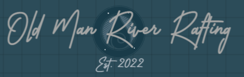

Overview
Purpose
We are old men (and women) enjoying nature as God intended in the rapids. This site is designed to help our target audience, active adults 40+ find out how to join and participate in our old man river excursions.
Audience
Active Adults 40 years or older who desire to experence nature through water rafting and build relationships with other older adults sharing the passion of river rafting.
Branding
Website Logos
Badge
Banner
Style Guide
Color Palette
[#193B49]Palette URL:
https://coolors.co/palette/253c78-2b59c3-d36582-ffeecf-c9a690| Primary | Secondary | Accent 1 | Accent 2 |
|---|---|---|---|
| [#FFEECF] | [#253C78] | [#C9A690] | [#D36582] |
Typography
Heading Font: Covered By Your Grace
Sub Heading Font: Averia Libre
Paragraph Font: Averia Libre
Normal paragraph example
The best Whitewater Rafting in Colorado, White Water Rafting Company offers rafting on the Colorado and Roaring Fork Rivers in Glenwood Springs. Since 1974, we have been family owned and operated, rafting the Shoshone section of Glenwood Canyon and beyond.
Colored paragraph example
Trips vary from mild and great for families, to trips exclusively for physically fit and experienced rafters. No matter what type of river adventures you are seeking, White Water Rafting Company can make it happen for you.
Navigation
Site Map
Wireframes
Home

What You Will See